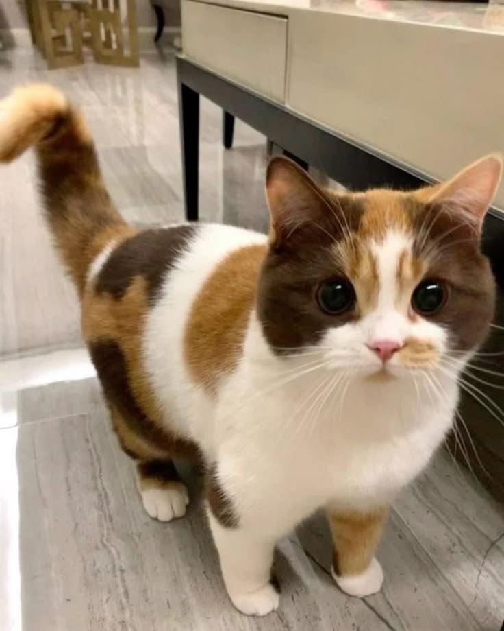
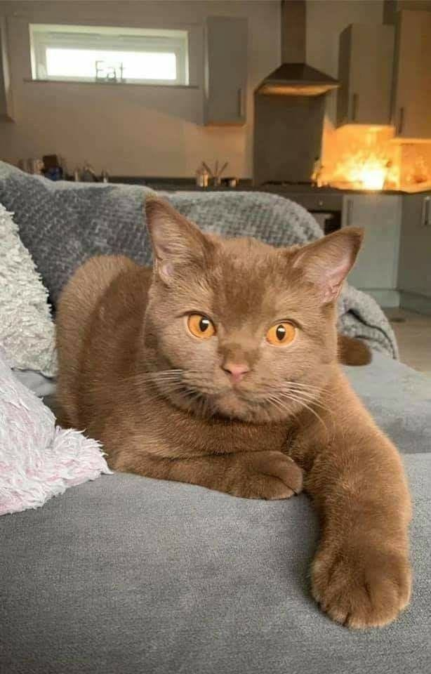
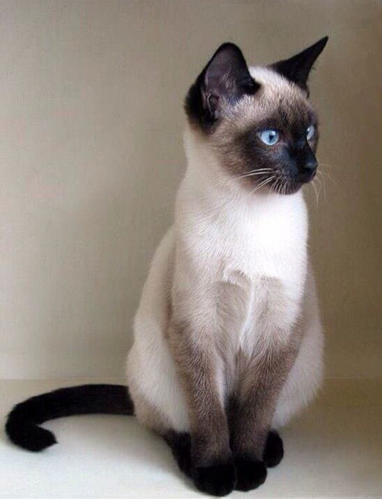
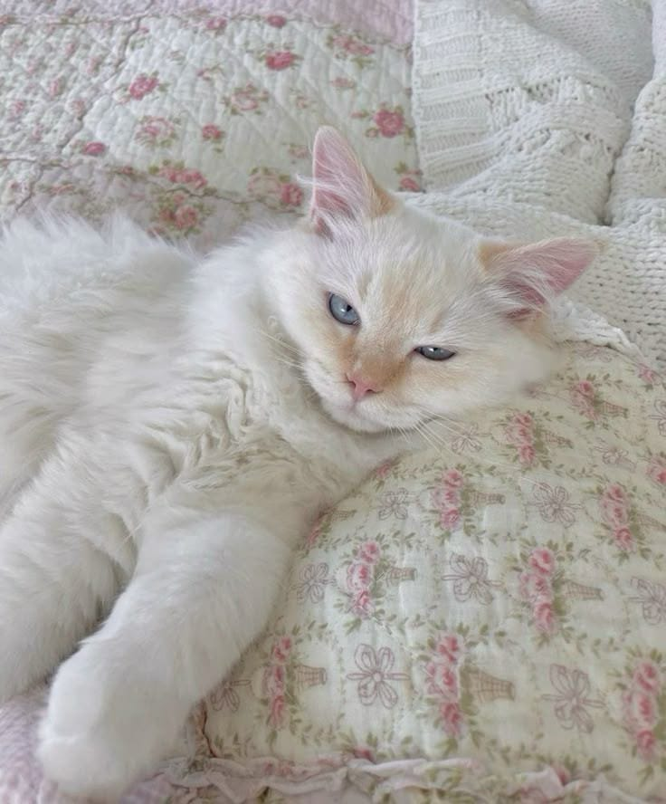
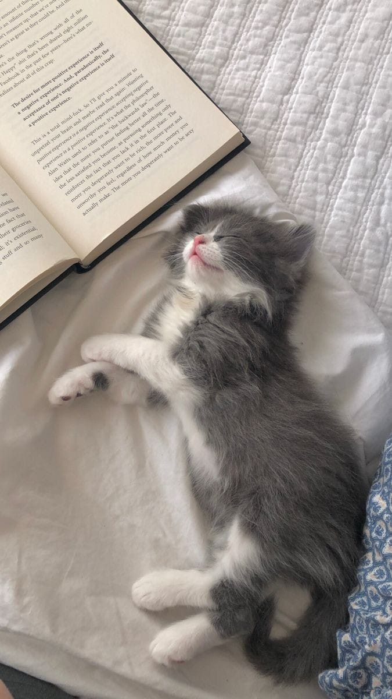
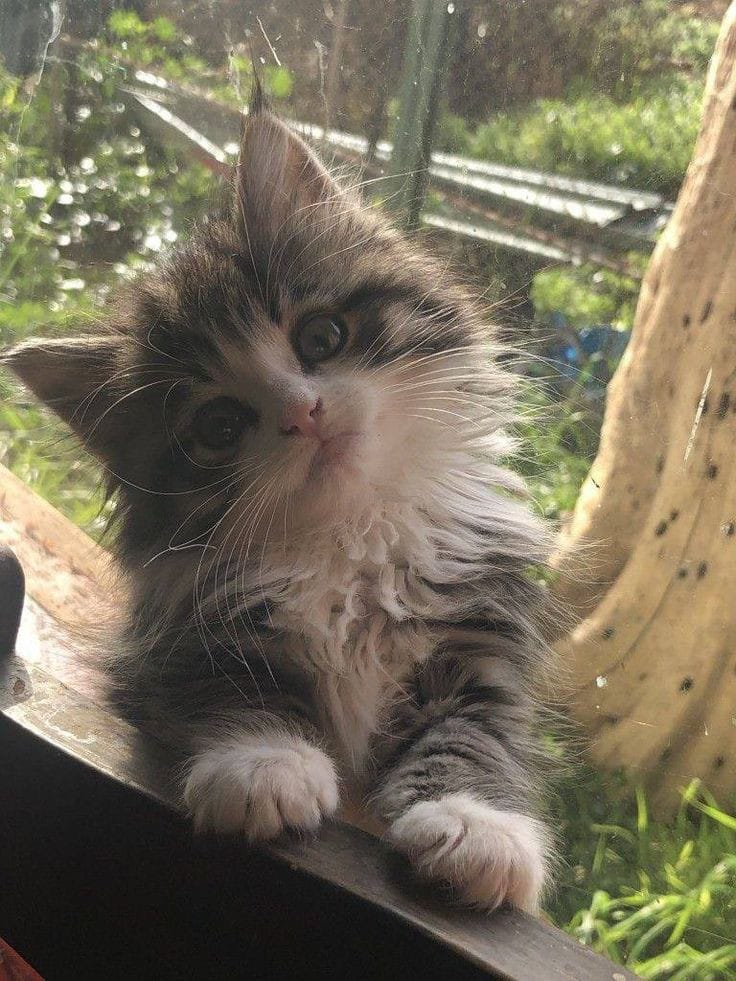
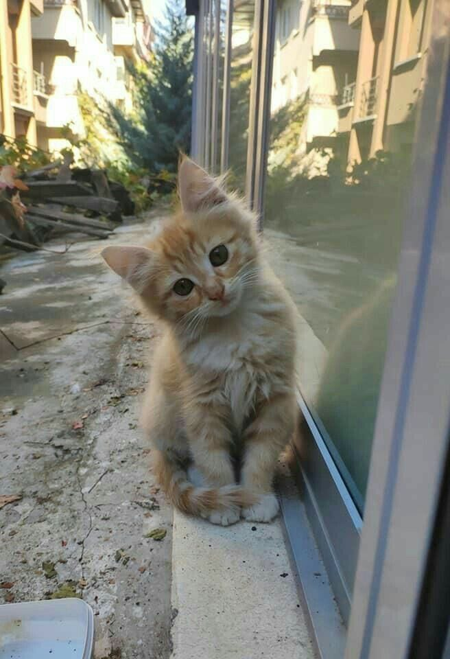

تبنى أليفك
في M.meow، نؤمن أن التبني ينقذ الأرواح. هنا تجدون قططًا تبحث عن منزل دافئ يمنحها الحب والاستقرار. كل قطة هنا تحمل قصة، وربما تكونون أنتم بدايتها الجديدة.
اللون
العمر
النوع

أنثى - بريطانية شعرها قصير - عمرها 6 شهور
0501234567

ذكر - بريطاني بلون كاكاو - عمره سنة
0549876543
أنثى - شيرازية بيضا ورمادي - شهرين
0533332211

ذكر - سيامي عيونه زرق - 8 شهور
0511122334

أنثى - بيضا ناعمة ولطيفة - عمرها سنة وشوي
0596677889

أنثى - رمادية وبيضا - ناعمة وعمرها شهرين
0552233445

أنثى - شعرها كثيف وعيونها كبار - 3 شهور
0577788990

ذكر - لون مشمشي على ذهبي - شهرين ونص
0525566778